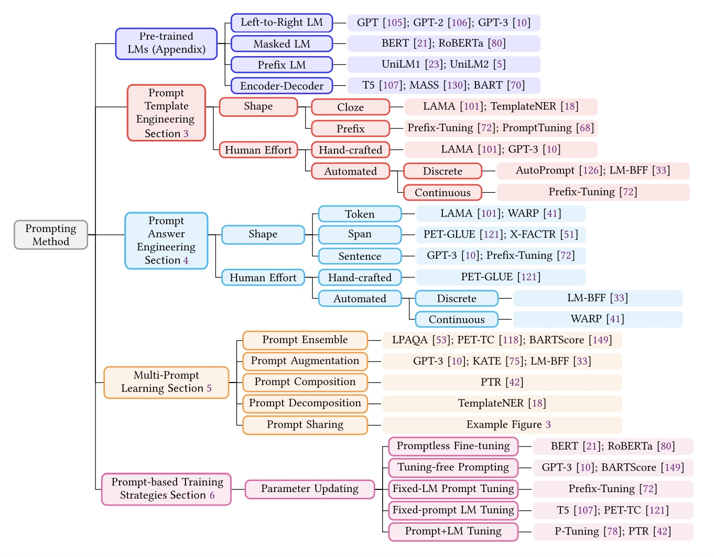
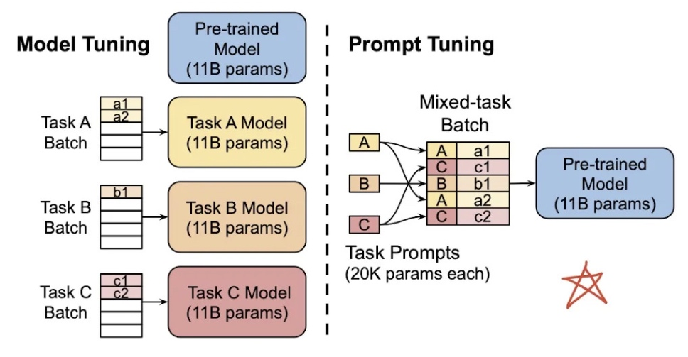
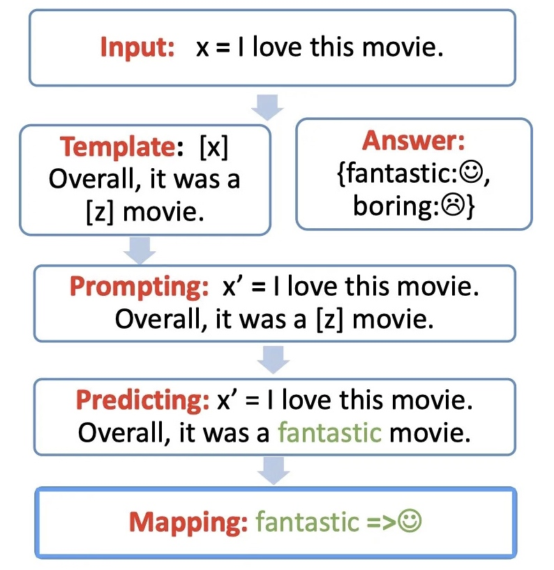

1 目的
一种为了更好的使用预训练语言模型的知识，采用在输入段添加额外的文本的技术。
2 方法分类

3 和Pretraing+Fine-tuning的区别

Pretrain+Fine-tuning：改变模型结构，使模型适配下游任务。传统的 Model Tuning 的范式：对于不同的任务，都需要将整个预训练语言模型进行精调，每个任务都有自己的一整套参数。
- 少样本学习效果差，容易过拟合；
- 每一个下游任务都需要进行Fine-tuning，造成部署资源的极大浪费。
Prompt：重构任务描述，使下游任务适配模型
对于不同的任务，仅需要插入不同的prompt 参数，每个任务都单独训练Prompt 参数，不训练预训练语言模型，这样子可以大大缩短训练时间，也极大的提升了模型的使用率。
4 流程

1. template构建：
- 本质：完形填空。
- 两个slots：x——输入文本；z——模型经过学习后得到的适合该空的词。
- 方式：shape；生成形式。
2. mapping构建
5 Prompt Template Engineering
5.1 handmade template
5.1.1 cloze template：填空提示
- z在template中间;
- 更适合Masked LM预训练模型。
5.1.2 prefix template：前缀提示
- z在template的末尾；
- 更适合生成任务或自回归模型。
5.2 auto template learning
让大模型自己去学习如何构造合适的prompt。
5.2.1 AutoPrompt
- search in discrete space；
- 不在意prompt是否可读，只要可以完成任务即可。
5.2.2 P-Tuning
5.2.3 P-Tuning v2
- search in continues space。